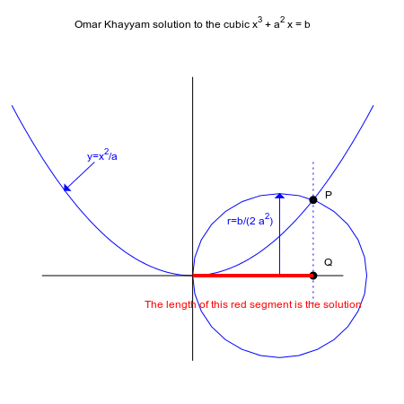

Omar Hayyam Method
This plot explains Omar Khayyam's graphical method to solve the cubic
equation x3+a2x=b, for a,b>0:
(http://riotorto.users.sourceforge.net/Maxima/gnuplot/omar/index.html)
(Realised with wxmaxima rel. 17.10.1)
| (%i1) | load(draw)$ |
| (%i10) | a:
3$ b: 26$ r: b/(2·a^2)$ |
| (%i11) | draw2d(/·
General
settings
·/ xrange = [−3,3], yrange = [−2,4], axis_top = false, axis_right = false, axis_left = false, axis_bottom = false, transparent = true, user_preamble = "unset tics", title = "Omar Khayyam solution to the cubic x^3 + a^2 x = b", dimensions = [450,450], terminal = svg, file_name = "omar", /· draw parabola y=x^2/a ·/ explicit(x^2/a,x,−3,3), head_length = 0.1, vector([−1.626,2],[−0.5,−0.5]), label(["y=x^2/a",−1.5,2.1]), /· draw circle: radius r & center (r,0) ·/ ellipse(r,0,r,r,0,360), vector([r,0],[0,r]), label(["r=b/(2 a^2)",r−0.5,r·2/3]), /· draw axis ·/ points_joined = true, color = black, point_size = 0, points([[0,3.5],[0,−1.5]]), points([[−2.5,0],[2.5,0]]), /· Mark points P e Q·/ color = black, point_type = 7, point_size = 1, points([[2,4/3]]), label(["P",2.25,1.42]), points([[2,0]]), label(["Q",2.25,0.23]), /· Draw parallel to parabola axis ·/ point_size = 0, color = blue, line_type = dots, points([[2,2],[2,−0.5]]), /· Get the solution ·/ line_width = 4, color = red, line_type = solid, points([[0,0],[2,0]]), label(["The length of this red segment is the solution",1,−0.5])) $ |
| --> |
Figure 1:E:\Dynamic_Content\Maxima Programs\omar.png
